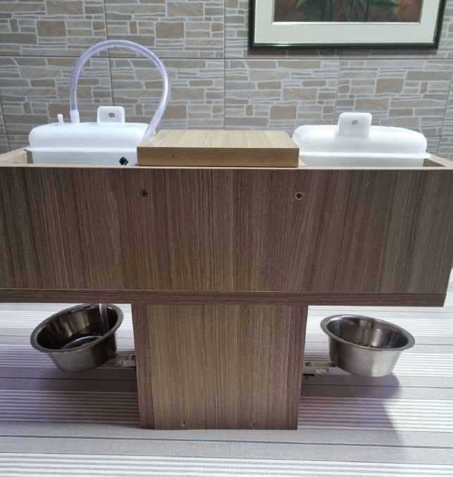
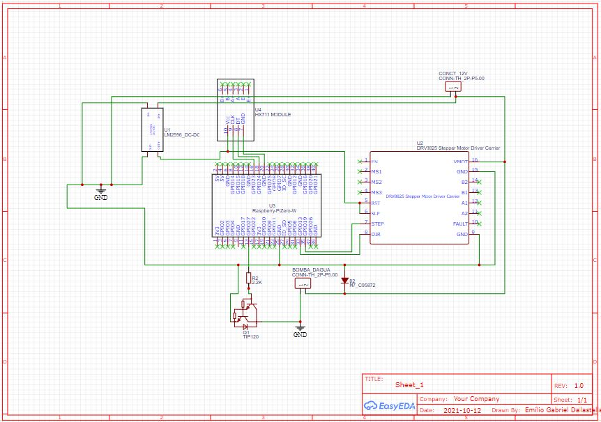

FeedMyPet
As the video shows, this project encompassed a complete IoT solution, from hardware design and manufacturing to firmware and software development.
Using a mobile app, the client could set up and account, set up its pets and configure how much food and how many times a day it was served and the exacly hour and minute.
It was possible to see if the food and water bowls were empty or how much was left in them.
If there were more than one module in the house, it was possible to control it through the same app.
Overview
Physical

Electrical

Technologies Used:
- React Native: Developed the native mobile app using React Native, allowing cross-platform compatibility for both Android and iOS devices.
- Node.js Express: Implemented the server-side using Node.js Express framework, handling API requests, and managing data flow between the mobile app and the Raspberry Pi.
- MongoDB: Created and hosted a non-relational database using MongoDB Atlas, storing and retrieving data related to user accounts, pet feeding schedules, and device configurations.
- Raspberry Pi Zero W: Utilized the Raspberry Pi Zero W as the hardware platform to control the pet feeder, executing the Python program to interact with actuators and sensors.
- Linux: Utilized the Linux operating system on the Raspberry Pi, executing the Python program at scheduled intervals for the automation of pet feeding tasks.
- Websocket: Implemented websocket communication to establish real-time interaction between the mobile app and the Raspberry Pi, enabling instant updates and notifications.
- Heroku: Deployed the server-side application on Heroku, providing a scalable and reliable hosting solution for the backend services.
- Expo: Leveraged Expo as a development tool to simulate and export the React Native app, simplifying the testing and deployment process.
- EasyEDA: Software used to make the electric scheme, where you select the components and connect them in the board.